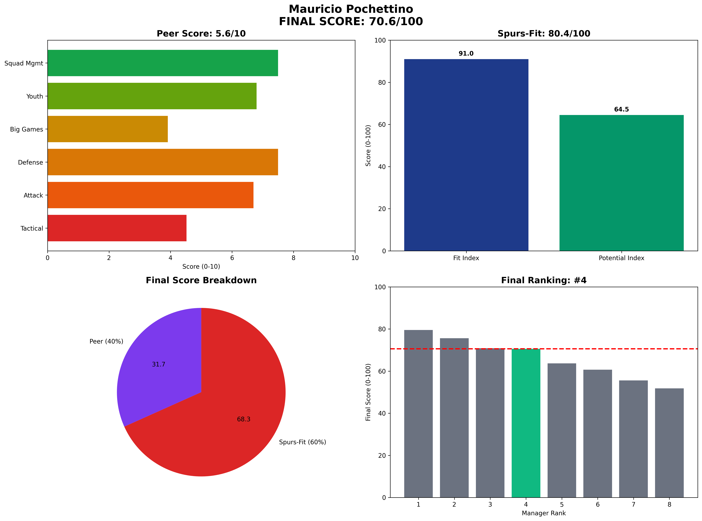

Mauricio Pochettino - Manager Analysis Report
66.2/100

Rank #1 of 8
The Homecoming Hero
Peer Analysis
6.5/10
Spurs-Fit
67.0/100
Mauricio Pochettino • Final Score 66.2/100
Executive Summary
70.6
Final Score / 100
Rank: #4 of 8
Mauricio Pochettino represents the emotional choice with declining analytical justification
Visual Profile
Comprehensive radar chart showing Pochettino's unified final scoring breakdown. His #4 ranking (70.6/100) shows strong Spurs-Fit alignment but declining potential trajectory limits overall appeal.
Unified Final Scoring Breakdown
Peer Analysis (40% of Final Score): 5.6/10
- Peer Ranking: #4 of 8
- Tactical Style: 4.5/10
- Attacking Potency: 6.7/10
- Defensive Solidity: 7.5/10
- Big Game Performance: 3.9/10
- Youth Development: 6.8/10
- Squad Management: 7.5/10
Spurs-Fit Analysis (60% of Final Score): 80.4/100
Fit Index (60% of Spurs-Fit): 91.0/100
- Front-Foot Play Alignment: ✅ Strong
- Youth Development Focus: ✅ Strong
- Talent Inflation Capability: ✅ Strong
- Big Game Mentality: ❌ Weak
Potential Index (40% of Spurs-Fit): 64.5/100
- Age Factor: ⚠️ Concern (Age 52)
- 3-Year Performance Trend: ✅ Strong
- Resource Leverage: ❌ Weak
- Temperament: ✅ Strong
Key Performance Indicators
Tactical Metrics
- PPDA: 9.9 (lower = more aggressive)
- OPPDA: 13.4 (higher = forces opponent pressure)
- High Press Regains/90: 8.1
Financial Profile
- Net Spend: £180M
- Squad Value Change: £210M
- Transfer Efficiency: Poor
Squad Development
- U23 Minutes %: 15%
- Academy Debuts: 12
- Player Availability: 90%
Strategic Assessment
Strengths
• Perfect fan connection • Academy development champion • Historical Spurs DNA understanding • Strong Spurs-Fit scores
Concerns
• Declining performance trajectory • High net spend requirements • Recent managerial struggles • Age reduces potential
Spurs Fit Analysis
Emotional appeal cannot overcome analytical concerns about declining performance.
Recommendation
**NOT RECOMMENDED** - Sentiment over statistics would be poor decision-making.
Analysis based on 2025-06-07 Methodology: 40% Peer-Normalized Analysis + 60% Spurs-Specific Fit Model